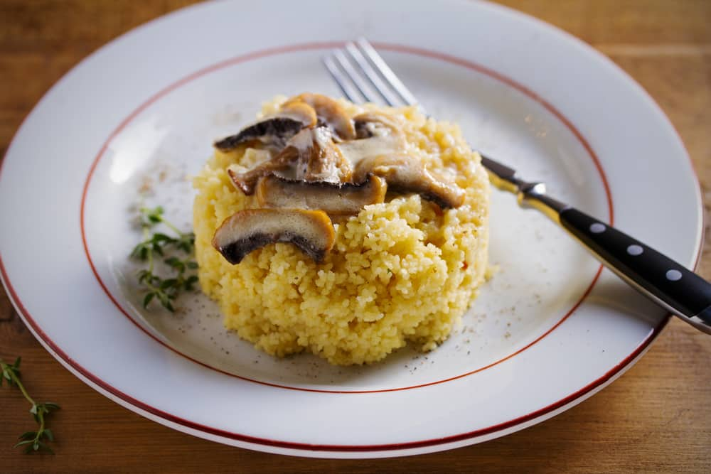
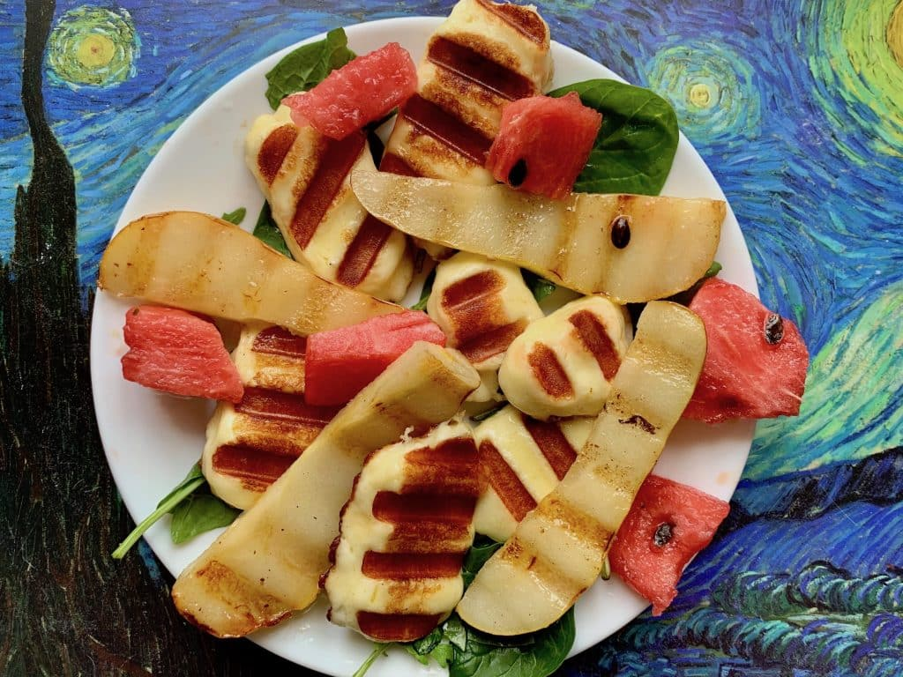

Содержание:
Рецепт блюда из яиц на завтрак
Яичница с беконом
Яичница с беконом на сковороде — один из лучших вариантов для завтрака. Сытно, аппетитно и очень вкусно! Хороший заряд энергии обеспечен.
Рецепт приготовления:
- Несколько тонких ломтиков бекона обжарим на сковороде по 3 минуты с каждой стороны.
- Затем отодвинем кусочки бекона в стороны. В центр сковороды вобьем 2 яйца.
- Добавим соль и черный молотый перец по вкусу.
- Будем жарить яичницу на среднем огне 5 минут, чтобы желток остался жидким.
- Аккуратно переложим готовую яичницу с беконом на тарелки, украсим блюдо свежей зеленью.
Рецепты завтраков с творогом
Подавать творог на завтрак считается хорошей старой традицией или привычкой, от которой не хочется отказываться. Это самая удачная разновидность утренней пищи, полезная для здоровья, придающая сил и энергии.
Сырники творожные
Отличный вариант для питательного и вкусного завтрака в выходные дни — это творожные сырники.
Ингредиенты:
- творог — 200 г
- яйцо — 2 шт.
- мука пшеничная — 2/3 стакана
- сахар — 1/2 стакана
- сметана — 1/2 стакана
- разрыхлитель или сода пищевая — 1/2 ч.л.
- растительное масло для жарки
Рецепты каш
Каши – это отдельный, совершенно особый вид блюд из круп и некоторых бобовых. В приготовлении каши из каждой крупы есть свои особенности. Например, гречку советуют обжарить на сухой сковороде, чтобы усилить аромат крупы, пшено — обдать кипятком, перловую крупу — замочить на несколько часов. Кроме того, вкус каши напрямую зависит от качества крупы: сорта, степени зрелости, сухости и свежести.
Кускус с грибами
Простейшее блюдо и такое вкусное, что не оторваться. На завтрак идет отлично. Во-первых, потому что кускус запаривается буквально 3-5 минут — его даже не надо варить, достаточно залить кипятком. А во-вторых, грибы — пища непростая для переваривания, поэтому их лучше есть в начале дня.
Рецепт приготовления:
- Головку репчатого лука и 1 зубчик чеснока очистим, мелко порежем, обжарим на разогретом оливковом масле.
- Шампиньоны (200 г) помоем, порежем на пластинки, добавим к овощам и продолжим обжаривать вместе 2-3 минуты.
- Добавим 0,5 ч. л. сушеных итальянских трав и соль по вкусу.
- В это время 1 стакан кускуса зальем 1,5 стакана кипятка, накроем сковороду крышкой и оставим на 5 минут.
- Готовый кускус разрыхлим вилкой, добавим в грибную смесь, перемешаем.
Блюда на завтрак из сыра
Сейчас такое многообразие сыров — хоть каждый день на завтрак пробуй новый. Домашние фавориты для завтрака — жареный халлуми и салат из бурраты с помидорами.
Халлуми
Если нужно быстро приготовить необычный завтрак с вау-эффектом, пожарьте сыр. Идеальный сыр для жарки — это халлуми. Он просто создан для быстрых завтраков — весь процесс займет минуты две. Халлуми обладает высокой устойчивостью к нагреванию, не растекается, а его корочка самая вкусная. Сервируйте свежими овощами, медом.
Овощные оладьи
Овощные оладьи очень полезные и вкусные, их можно приготовить из картофеля, кабачков, моркови и даже тыквы. Можно добавить к овощам творог, сыр или брынзу, чтобы разнообразить привычный вкус овощных оладьев.
Кабачковые оладьи
Всеми любимые оладьи можно сделать и вполне диетическими. Добавление кабачков и отсутствие муки делают их и полезными, и вкусными.
Рецепт приготовления:
- Один кабачок натрем на крупной терке, посолим.
- Отожмем овощи от лишнего сока.
- Добавим к кабачкам 1 тертую морковь и мелко порезанную головку репчатого лука.
- Вобьем в смесь 2 куриных яйца.
- В отдельной посуде смешаем 100 мл кефира и 40 г манной крупы. Добавим полученную смесь в овощную массу.
- Оставим тесто для овощных оладьев на 20 минут.
- ОСформируем оладьи, выложим их на сковороду с разогретым растительным маслом.
- Обжарим кабачковые оладьи до золотистого оттенка с двух сторон.
Рецепты завтраков выходного дня
Как сделать выходные активными, насыщенными и одновременно уютными? Начать утро с идеального завтрака. Более оригинального и необычного, нежели в будни.
Буррито
Хит мексиканской кухни — бурито в домашних условиях! С ним придется повозиться, но отличный результат.
Рецепт:
- Мелко нарезаем лук и чеснок.
- Обжариваем на растительном масле лук и чеснок около 2-х минут на среднем огне. После этого откладываем их в тарелку.
- Нарезаем курицу на небольшие кусочки и обжариваем в разогретом растительном масле на сильном огне 2-3 минут до появления румяной корочки. Обжариваем небольшими частями для того, что на мясе быстрее появилась корочка, которая не даст убежать соку и курица будет сочнее и мягче. Солим по вкусу и перемешиваем.
- Добавляем к мясу лук, чеснок и, нарезанный полосками, перец. Обжариваем на среднем огне около 3-х минут.
- Добавляем в сковороду фасоль, кукурузу, зиру, молотый перец чили и помидоры. Я использовал консервированные томаты, но также можно использовать томатное пюре или мелко нарезанные помидоры без кожицы. Зиру следует помолоть либо растереть пальцами до мелких крупинок. Хорошо перемешиваем и обжариваем на среднем огне ещё 3 минуты.
- Натираем на крупной тёрке сыр, лучше использовать тот, который хорошо плавится при нагревании. Добавляем сыр в сковороду и перемешиваем.
- Дожидаемся когда сыр расплавится и снимаем сковороду с огня.
- Приготавливаем тортильи, сейчас мы будем собирать буррито. На край лепёшки выкладываем 3-4 столовых ложки готовой начинки. И сворачиваем буррито.
- Оборачиваем один конец буррито фольгой или пергаментом, чтобы начинка не вытекла, и подаём к столу.